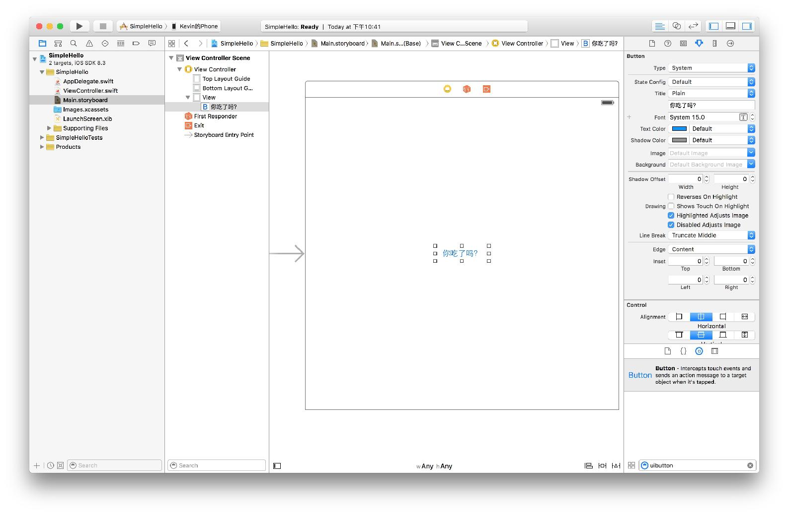
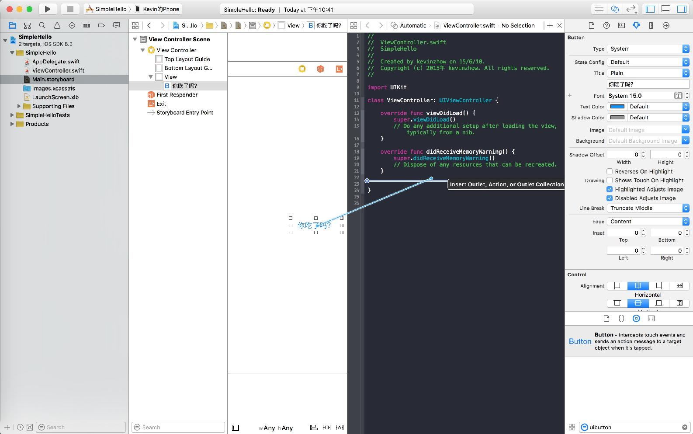
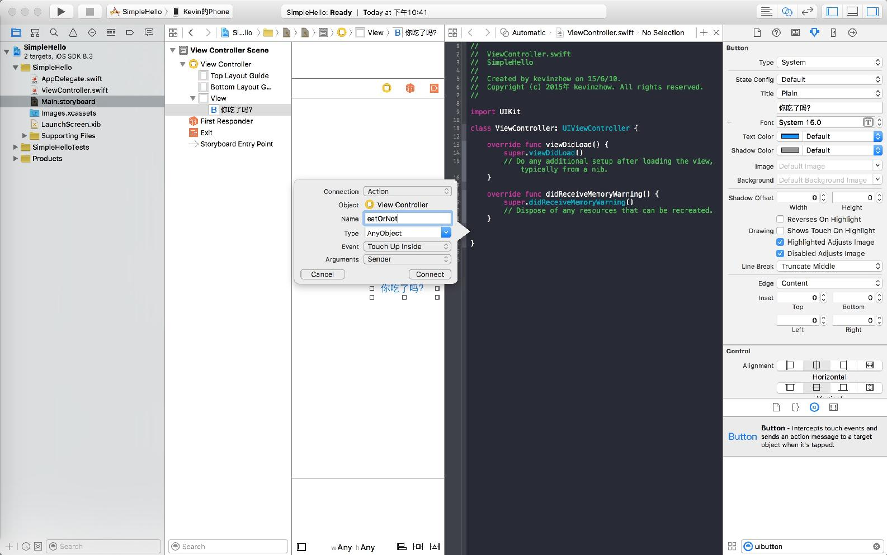
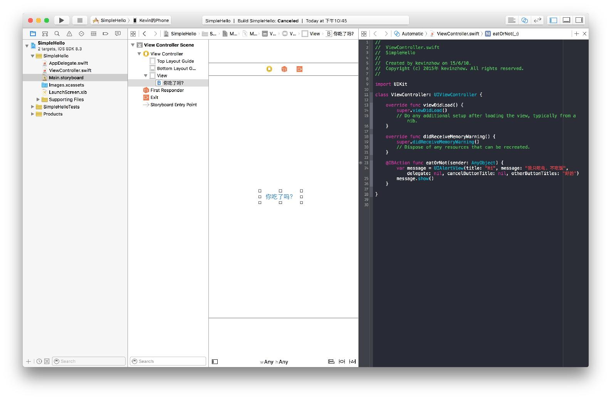
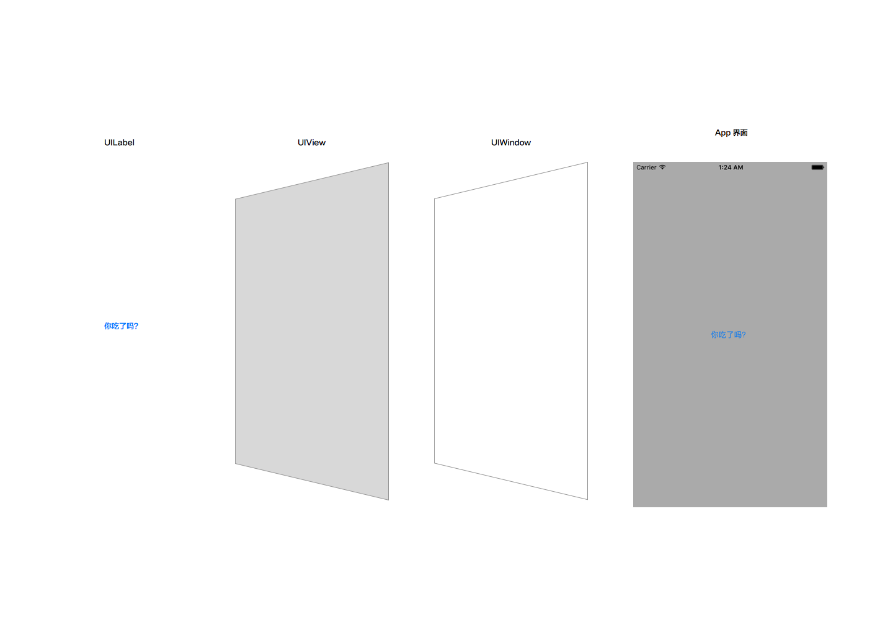

产品的实现 - 一个简单的 iOS App
Product Design: 产品的实现 - 一个简单的 iOS App
在开始复杂的 iOS App 之前，我们先从最简单的 App 熟悉下它是怎么运作的。
点击你吃了吗，会弹出一个对话框，显示 “我只吃电，不吃饭”，这个简单的 App 我们会分别使用 AutoLayout 和 代码布局来实现，以对比两种开发方式的开发成本。
你可以在 Github 找到相关代码。
纯代码布局
点击左边的 ViewController.swift 输入以下代码
//
// ViewController.swift
// SimpleHello
//
// Created by kevinzhow on 15/6/10.
// Copyright (c) 2015年 kevinzhow. All rights reserved.
//
import UIKit
class ViewController: UIViewController {
var askButton: UIButton!
override func viewDidLoad() {
super.viewDidLoad()
let askButton = UIButton(type: UIButtonType.System)
//创建一个 UIButton
askButton.setTitle("你吃了吗",
forState: UIControlState.Normal)
//创建一个 设置默认状态下的文字，显示为 你吃了吗
askButton.addTarget(self, action: "eatOrNot",
forControlEvents: UIControlEvents.TouchUpInside)
//当点击这个 Button 的时候，执行 self （即 ViewController 这个类） 里面的 eatOrNot 方法
askButton.frame = CGRect(
x: view.frame.width/2.0 - 50,
y: view.frame.height/2.0 - 20,
width: 100, height: 40)
//通过计算 View 的高度和宽度，以及这个 Button 的宽度和高度，将 Button 放置在屏幕中间
view.addSubview(askButton)
//把 Button 添加到容器（即 View 里）
// Do any additional setup after loading the view, typically from a nib.
}
override func didReceiveMemoryWarning() {
super.didReceiveMemoryWarning()
// Dispose of any resources that can be recreated.
}
func eatOrNot() {
let message = UIAlertView(title: "Hi",
message: "我只吃电，不吃饭",
delegate: nil, cancelButtonTitle: nil,
otherButtonTitles: "好的")
//创建一个 UIAlertView 类
message.show()
//显示这个 AlertView
}
}
可能你对这个 App 里的诸多方法已经感到满脑子浆糊，不过你可以先不用深究到底是如何工作的 ，大体存在一个概念即可，随着你使用的次数越来越多，你就会逐渐清晰一切是怎样的约定。
我们没有进入 Storyboard，只是在代码里就完成了 Button 的创建，添加以及事件的响应。但是在设置 frame 的时候你已经可以感受到，比起之前的 AutoLayout 的简单绑定，这里进行了一个相对复杂的多的计算来实现居中。
为什么这么计算呢？来看看下面这张图——

这里的 View B 就是我们的 Button，View A 就是我们的容器 view，View A 和 View B 的坐标系原点都是左上角。
CGRect(x: view.frame.width/2.0 - 50,
y: view.frame.height/2.0 - 20, width: 100, height: 40)
在这行代码里，x 和 y 代表 Button 的左上角在 View A 里的位置。我们计算了容器 View A 的中心点，然后 x 和 y 方向各减去了 Button 的宽和高的一半，使之居中。
AutoLayout
重新回到我们的初始项目，在右下角搜索 button，把 UIButton 拖到 View 中，进行居中约束。

在 Attribute Inspector 里，修改 title 为 “你吃了吗” 并缩放下 Button 的大小使它完整显示。
点击右上角两个圈的图标 (Assistent Editor) Xcode 会打开相应的 ViewController.swift 按住 Control 拖拽 button 到 ViewController.swift 里

松开后 Xcode 会问你想要创建哪种连接 (Connection)，选择 Action，Name 输入 eatOrNot

编辑这个 eatOrNot 函数
let message = UIAlertView(title: "Hi",
message: "我只吃电，不吃饭",
delegate: nil, cancelButtonTitle: nil,
otherButtonTitles: "好的")
message.show()

到此，运行你的 App，就可以实现了我们之前纯代码的功能了，怎么样？是不是感觉鸟枪换炮，瞬间高大上起来？
你可以在 从 SimpleiOSApp 中的 SimpleHello_final 获取我们的 AutoLayout 布局代码。
iOS App 的 UI 结构
上面这个 Demo 过后，你应该对 iOS 的 App 已经有了一个大概的了解，那么接下来我们一起来深入其中。 首先在上面的 Demo 的 ViewDidLoad 里修改 View 的背景色
self.view.backgroundColor = UIColor.lightGrayColor()
当 App 运行起来后，我们可以根据下图来分析下其 UI 结构

在最右边是一个 App 完整的界面，最底层是一个 UIWindow，这就像你在电脑上打开一个软件一样，这个软件会有一个主窗口，而软件的界面就是被显示在这个 UIWindow 里。
在 UIWindows 上有一层 UIView，也就是我们所修改的 self.view，这个 UIView 会默认存在，而 self 就是我们的 UIViewController。
而再往左的 UILabel 则是我们添加到 self.view 上去的，这个 UILabel 被称为 self.view 的 subview。
App 顶端的 Status Bar （状态栏）是一个比较特殊的 UIWindow，就像你的电脑系统界面顶端的状态栏，它并不属于任何一个 App。
了解了 iOS App 的 UI 结构之后，下一章节我们就来研究一下 iOS 的动画是怎么回事。